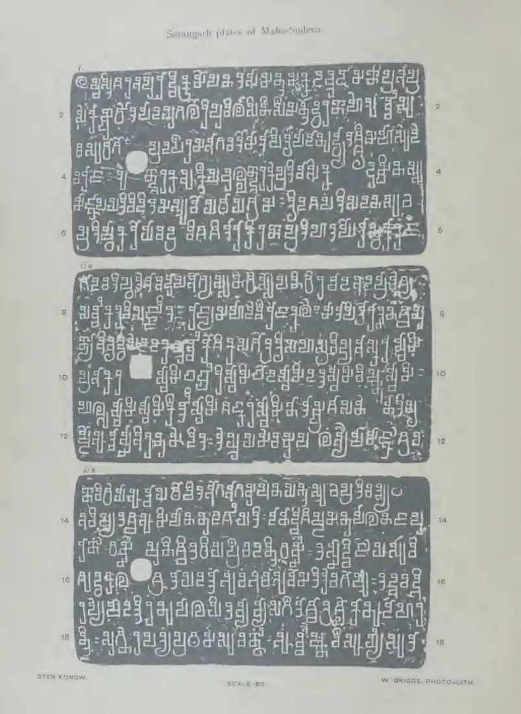

Sârangarh plates of Mahâ-Sudêva
SARANGARH COPPER PLATES OF MAHA-SUDEVA.
BY HIRA LAL, B.A., NAGPUR.
Sārangarh is the capital of a fendatory State of the same name in the Chhattisgarh division of the Central Province, 32 miles south of Raigarh, the capital of another State and a station on the Bengal-Nagpur Railway. The chiefs of these two States are Râj-Gôṇda. The plates in question are in the possession of the Râj family and first came to my notice in the beginning of the year 1903 at my last visit to Sārangarh. As they were locked up and the keys were not available at the time, the then Superintendent of the State, Rai Sahib Ålam Chand, promised to send them to me when I asked for them, but my reversion to the executive duties before I could return to head-quarters, followed by Pandit Ålam Chand's retirement from service, left them where they were, until the present Superintendent. Munshi Akbar Khân, took active steps in the matter at the instance of Rai Bahadur Pandâ Baijnath, B.A., Dîwân of the Bastar State, and sent them on to me on the 7th January 1903. Thus the recovery of the plates first discovered over forty years ago is as much due to the interest of the above gentlemen as to the readiness of Râja Jawâhar Singh to lend them for examination.
The exact date and the details of the first discovery are not now forthcoming, but the plates are said to have reached the Bengal Asiatic Society on the 7th December 1864.5 Dr. Râjendra Lâl Mitra published them in that Society's Journal in 1863, where he stated that they were presented to the Society by Lieutenant G. Bowie of the Sambalpur Police Corps. but when Dr. Fleet wrote his Gupta inscriptions about 1888, and searched for the plates, he could not
1 From the original stone.
2 Read प्रियाणि.
3 Read गुरीर्भक्ति:.
4 Read प्रियाणि.
5 See Journ. Beny. As. Soc. Vol. XXXV., p. 195 ff.
find them. He then recorded that as the published version was not sufficiently reliable to be reproduced he was unable to include this inscription in his volume.1
The fact appears to be that the plates were never presented to the Society. They were simply lent by and finally returned to the owner, the Sârangarh family, whose State was in those days included in the Sambalpur district, now transferred to Bengal.
These facts combined with the absence of a facsimile copy of the record in Dr. Râjèndra Lâl's notice, together with certain misreadings of the text, afford, I venture to think, sufficient reasons for re-editing this inscription.
There are two copper plates, each measuring , and the weight of the two together is 12 ozs. drs. About 1" from the proper right margin each plate has a hole, roundish on one side and squarish on the other, the diameter being about . These were intended for stringing the plates on the ring, the loss of which has deprived our inscription of its last portion, which must have been engraved on a third plate. The lost plate must have contained about 5 or 6 lines2 which can almost be restored from other inscriptions of the same king, and of Mahâ-Jayarâja, all of which are composed in exactly the same wordings, the names of villages granted and the donees being of course different. In our inscription only some of the imprecatory verses are lost as also the date at the end, which of course cannot be restored. Judging from other inscriptions of this king the date must have been in regnal years, so that it could not have been of much help beyond fixing the priority or otherwise of our inscription as compared with others.
The plates recovered are in an excellent state of preservation. One is inscribed on one side and the other on both in characters of the box-headed variety of the Central Indian alphabet. The letters are very neatly and well formed, their average size being about . The accompanying plate gives a facsimile copy, from impressions kindly taken for me by Mr. T. G. Green, Superintendent of the Government Press, Nagpur.
The language is Sanskrit prose except the usual imprecatory verses, here attributed to Vyâsa. As regards orthography, there is very little to be noticed beyond what has been already done by Dr. Konow with regard to another inscription of the same king recently found at Khariar.3 As the composition is almost identical, the peculiarities are common to both. The upadhmânîya occurs in line 3 in -pradaḥ=parama-. The same sign, viz. 2 dots, has been used for visarga and a pause. Ordinarily mâtrâs for u, ri and î alone are attached at the foot of letters, but in this inscription there is a curious example in line 12 where the sign for ô in anumôditaḥ is partly exhibited by a top and partly by a foot stroke, all other ô's being represented by the top strokes for â and ê; compare vikkramôpanata- of line 1.
The inscription was issued from the town of Şarabhapura and records the grant of a village named Chullandaraka situated in the bhuktî or subdivision of Tuṇdaraka by the Queen and the royal family of Râja Mahâ-Sudêva and assented to by him, to a number of learned priests, viz. Bhâskarasvâmi, Prabhâkarasvâmi, Barbbarisvâmi, Bôṭasvâmi, Dattasvâmi, Vishnusvâmi, Phalgusvâmi, Svâmikîrttisvâmi and Şamkarasvâmi, all of the Kauśika gôtra. One of these, Vishnusvâmi, is apparently identical with the donee of the Khariar plates. He also belonged to the Kauśika gôtra and received a village in the Khariar zamîndârî from this king. Neither these two nor the third charter of this king, which was obtained from Raipur, throw any light on the dynasty to which he belonged or on
1 Gupta Inscriptions, p. 193, footnote 2.
2 Eighteen lines of our inscription remain; the Khariar plates have 23 lines, the Ârang plates of Jayarâja 24, and the Raipur plates of Sudêva 28, but these last ones are much smaller in size than the others. Our plates are slightly bigger than all the three sets.
3 See above, pp. 170 and ff.
Plate 1 is bound after this page.
his date. Dr. Konow has conjectured that the Śarabhapura kings might have been Ráshtrakútas. They were ascendant in the Central Provinces about the 8th century to which period the characters of our inscription belong. But Dr. Konow, for reasons pointed out by him, regards the identification as yet very doubtful.
Of the geographical names occurring in the inscription Śarabhapura, which recurs in the other two grants of Mahá-Sudéva, and in the Árang plates of Mahá-Jayarája, has not yet been identified. I identify Tuṇdaraka with the present Túṇdrá, about 6 miles south of Seorí Náráyan on the Mahánadí and about 35 miles west of Sárangarh. It is now included in the Balódá Bazár tahśíl of the Raipur district. The village Chullaṇdaraka must have been somewhere close to Túṇdrá, but I am at present unable to trace it. If it exists we would now find the name in a form like Chulándur, a characteristic Chattisgarhí name, some similar ones which I remember being Machándur, Palándur, Kachándur, etc. It appears to me that another village granted by Mahá-Sudéva in his Raipur charter was not very far away from Túṇdrá. It is called Śrisáhiká,1 which I take to be the present Sirsáhí, also included in the Balódá Bazár tahśíl, and situated about 25 miles south-west of Túṇdrá. Mahá-Jayarája of the Árang plates, who belonged to the same dynasty, also seems to have granted a village in the same part of his kingdom, riz. Pariva,2 which I identify with Pámgarh,3 about 21 miles north of Túṇdrá and included in the Jánjigir tahśíl of the Biláspur district. Pariva and Śrisáhiká are stated to be included in the Púrvaráshtra or Eastern country, and we know from the Khariar plates that to the south the kingdom extended at least up to Khariar. This leads to the inference that the territories of Mahá-Sudéva included a large portion of Mahá-Kósala, or roughly speaking Chattisgarh division.
TEXT.4
First Plate.
1 Óin5 svasti [[*]] Śarabhapurád=vikkram-ópanata-sámanta-makuṭa-chúdáma, i-prabhá-pra-
2 sékámbu-dhóta6-pádayugaló rípu-vilásiní-símant-óddharapa-létur=vvasu-
3 vasudhá-gö-pradaḥ=paramabhâgavatô mátá-pitrí7-pád-ánuddhyntas-śri-Mahá-Sudé-
4 va-rájaḥ Tuṇdaraka-bhuktiya-Chullaṇdarakê prativási-kuṭumbinas=su-
5 májñápayati [[*]] Viditam=astu vô yath=áyam grámaḥ tridaśajati-sadana-sukha-
6 pratishṭhákarô yávad=ravi-śaśi-tárá-kirapa-pratihata-ghôrándhakáram ja-
Second Plate; First Side.
7 gad=avatishṭthatê távad=upabhôgyas=sanidhis=sópanidhir-acháṭabhataprávéśya-
8 sarvva-kara-visarjjitaḥ rájya-mahádévi-8rójakulaih mátápitrôr=átmanams9=cha pu-
9 ny-ábhivṛidhayê udakapúrvvam10Kóśika-sagótra-trisahasravidya-Bháskarasvámi-
10 Prabhákarasvámi-Barbbarisvámi-Bôṭasvámi-Dattasvámi-Vishpusvámi-
11 Phalgusvámi-Svámikírttisvámi-Śañkarasváminâ[[m*]] támbraśásanên=átispri-
12 shṭô bhútv=ásmábhir=anumôditaḥ [[*]] Tê yúyam=évam=upalabhy-aishám-újñáśrava-
1 Gupta Inscriptions, p. 197.
2 Ibid, p. 192.
3 The adjunct garh seems to have been added when a mud fort, which still exists, was built there.
4 From the original plates.
5 Expressed by a symbol.
6 Read -dhauta-. [It is possible that the sign read as ó here and in kóśika, l. 9, should be read as au. The two mátrás are separated by an interval, which is not the case where ó is intended. This remark also applies to the other plates of this king.—S. K.]
7 Read -pitri-.
9 Read =átmanxé-.
6 Read -rájakulaih.
10 Read Kausika-.
Second Plate; Second Side.
13 ṇa-vidhêyâ bhûtvâ yathôchitam bhôga-bhâgam=upanayantas=sukha[m*]
prativatsyatha [||*]
14 Bhavishyataś=cha bhûmipâu=anudarśayati || 1 Dânâd=viśishṭam=anupâl=naja[m*] pu-
15 râpâmh2 dharmmêshu niśchitadhiyah=pravadanti dharmmam || (l) tasmâ[d*]
dvijâya suvi-
16 śuddha-kula-śrutâya dattâm bhuvam bhavatu vô matir=êya gôptum ||
Tad=bhavadbhi-
17 r=apy=êshâ dattir=anupâlayitavyâ [||*] Vyâsa-gîtâmś=ch=âtra ślôkân=udâhara-
18 nti || 3Agnêr=apatyam prathamam suvarṇṇam (||) bhûr=vvaishṇavî sûryyasutâ4
TRANSLATION.5
Om! Hail! From Sarabhapura. The illustrious Mahâ-Sudêva Râja, whose two feet are washed by the water which is the flowing forth of the lustre from the crest jewels in the tiaras of the chiefs who have been subjugated by (his) prowess; who is the cause for the doing away with the parting of the hair of the women of his enemies; who is the giver of riches, of land and of cows; who is a devout worshipper of the Bhagavat; who meditates on the feet of his mother and father—issues a command to the householders living in Chullaṇdaraka in the territorial sub-division (bhukti)6 of Tuṇdaraka:—
Be it known to you that this village, the source (by this grant of it) of (our) ensuring the happiness of the abole of (Indra), the lord of the gods—which has been conveyed by a copper charter accompanied with (pouring) of water, by the Royal Consort7 and the Royal Family to Bhâskarasvâmi, who knows the three thousand8 (verses?) Prabhâkarasvâmi, Barbbarisvâmi, Bôṭasvâmi, Dattasvâmi, Vishṇusvâmi, Phalgusvâmi, Svâmikîrttisvâmi,9 (and) Śaṅkarasvâmi (all) of the Kauśika gôtra, to be enjoyed as long as the world endures, having the terrible darkness dispelled by the rays of the Sun, the Moon and the Stars, together with its treasures and deposits, not to be entered by the district officer10 and soldiers; (and), free
1 Metre Vasantatilaka.
2 Read purâṇd.
3 Metre Indravajrâ.
4 The remaining portion of the verse is: -ś=cha gôvah| dattâs=trayas=lêna bhavanti lôkâ yah kâñchanain gâm cha mahîn cha dadyât ||.
5 I have freely adopted the language of other translators of similar inscriptions, especially of Drs. Konow and Fleet.
6 Bhukti was an old territorial division, the exact meaning of which has not yet been ascertained. It occurs in other inscriptions (see Gupta Inscriptions, p. 218, note 5) and sometimes becomes permanently attached to names such as Jêjabhukti, the ancient name of Bundelkhand, which was corrupted into Jajhauti in Al Beruni's time; (see above Vol. I., p. 218, and Sachau's Al Beruni's India, Vol. I., p. 202).
7 Mr. Venkayya suggests to take Râjyamahâdêvi as the name of the queen.
8 The original is trisahasra-vidya, which Dr. Râjèndralâl has taken to be a part of the proper name Bhâskarasvâmi, but I think it is an adjectival phrase eulogising his learning which extended to the knowledge of three thousand of—what is not stated. Probably he knew three thousand ślôkas of some very important and difficult work, considered as a great achievement in those times.
9 [The proper form of the name is certainly Kîrttisvâmin, but the second part of the preceding name has been repeated by mistake.—S. K.]
10 The word is châṭa, usually, translated 'irregular troops,' which translation I adopted in my Betul and Ragholi plates. Dr. Vogel, some time ago, kindly drew my attention to this point giving a more plausible explanation of the word. He wrote to me:—
'On my first visit to the ancient Hill State of Chamba (Panjab) I learnt that the head of a pargana there has the title of châr, which is evidently derived from Sanskrit châṭa. The châr collects the villagers who have to do work (forced labour) on behalf of the State; he arranges for load carriers and supplies in case the Râja or some traveller visits his district. I have little doubt that the châṭa of the copper plates is the same as the châr of the Chamba State. In the Chamba copper plates published in the Annual Report of the Archaeological Survey (1902-03) I have therefore rendered the word by 'district officer.' It was clearly a
from all taxes,—has been sanctioned by us, for the increase of the religious merit of (our) parents and of ourselves. Being aware of this you should be obedient to their commands, and should dwell in happiness rendering in proper manner (their) share of the enjoyment.
And he enjoins upon future king:.—The ancients whose minds are fixed upon religion say that the virtue that arises from the preservation (of a grant) is greater than (that which arises from making a grant); therefore your mind should verily incline to preserve land that has been given to a Brāhmaṇ of very pure family and holy learning. Therefore this gift should be preserved by you also.
And they cite on this point the verses that were sung by Vyāsa:—Gold is the first offspring of fire; the earth belongs to the Gol Vishnu and (cows are) the daughters of the sun: (therefore the three worlds are given by him who gives gold, and a cow and land).1
1 These words which must have been engraved in the third plate have been supplied to make sense.
